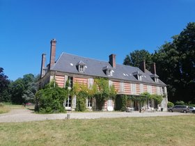
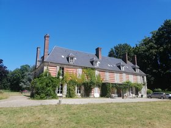

Concept
Couper du quotidien
A l’approche du concours ou de l’examen, les révisions s’intensifient, le rythme augmente et souvent le temps manque. Que vous soyez étudiant-e- chez vos parents ou en logement, en couple ou parent, les jours précédents un concours sont souvent tendus, car il faut continuer à gérer un minimum le quotidien. Couper quelques jours du quotidien permet de prendre naturellement du recul aussi bien intellectuellement que physiquement et de bien garder son énergie pour le jour J.
Laisser les contraintes quotidiennes
Révisions Nature propose des séjours de 4 ou 5 jours où vous ne vous concentrerez que sur vos révisions. Dans un château de famille au cœur de la nature en Normandie, vous êtes logé-e- en chambre double ou individuelle et nous prenons en charge tous les repas. Vous êtes libre d’organiser votre travail comme vous le souhaitez pendant la journée.
Réviser intensivement
La journée est consacrée à l’étude silencieuse : 4 salles sont à votre disposition au rez-de-chaussée du domaine, avec wifi. Vous apportez tous vos supports utiles pour travailler. Vous pourrez travailler à plusieurs ou seul(e). Des cours particuliers de Physique et Chimie peuvent aussi être dispensés sur demande jusqu’au niveau Capes.
Echanger et se changer les idées
L’idée de ce séjour est, aussi, de pouvoir échanger entre nous sur les temps de repas au sujet des orientations, des concours, des carrières... Que vous veniez seul(e) ou à plusieurs, il est important de pouvoir continuer à partager dans ces moments de révisions. Pour vous détendre, il y a aussi un grand parc, des vélos, un écran pour DVD pour le soir et un terrain de tennis.